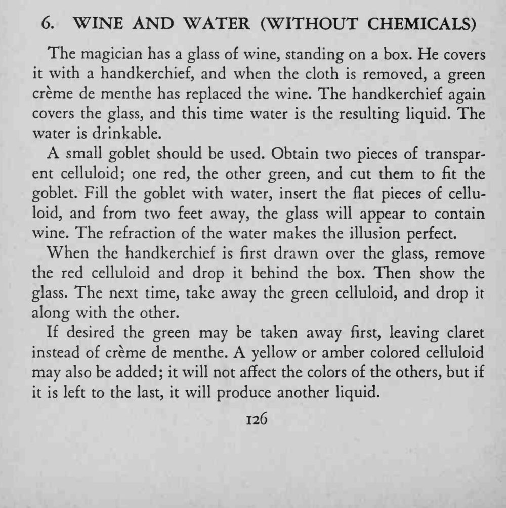
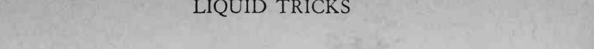

箱子上的一杯葡萄酒，盖上手帕再揭开，变成了绿色的薄荷利口酒；再盖上揭开，又变成一杯清水。
水的折射让颜色错觉更逼真，杯子要透明、水量要满。


The magician has a glass of wine, standing on a box. He covers it with a handkerchief, and when the cloth is removed, a green creme de menthe has replaced the wine. The handkerchief again covers the glass, and this time water is the resulting liquid. The water is drinkable. small goblet should be used. Obtain two pieces of transparent celluloid; one red, the other green, and cut them to fit the goblet. Fill the goblet with water, insert the flat pieces of celluloid, and from two feet away, the glass will appear to contain wine. The refraction of the water makes the illusion perfect. When the handkerchief is first drawn over the glass, remove the red celluloid and drop it behind the box. Then show the glass. The next time, take away the green celluloid, and drop it along with the other. If desired the green may be taken away first, leaving claret instead of creme de menthe. A yellow or amber colored celluloid may also be added; it will not affect the colors of the others, but if it is left to the last, it will produce another liquid.